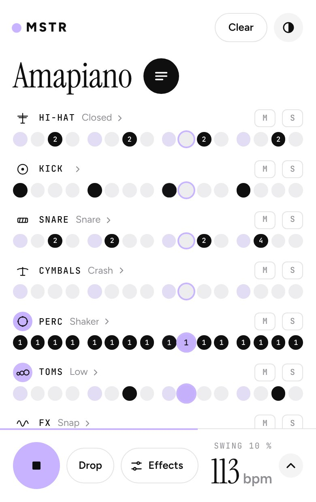
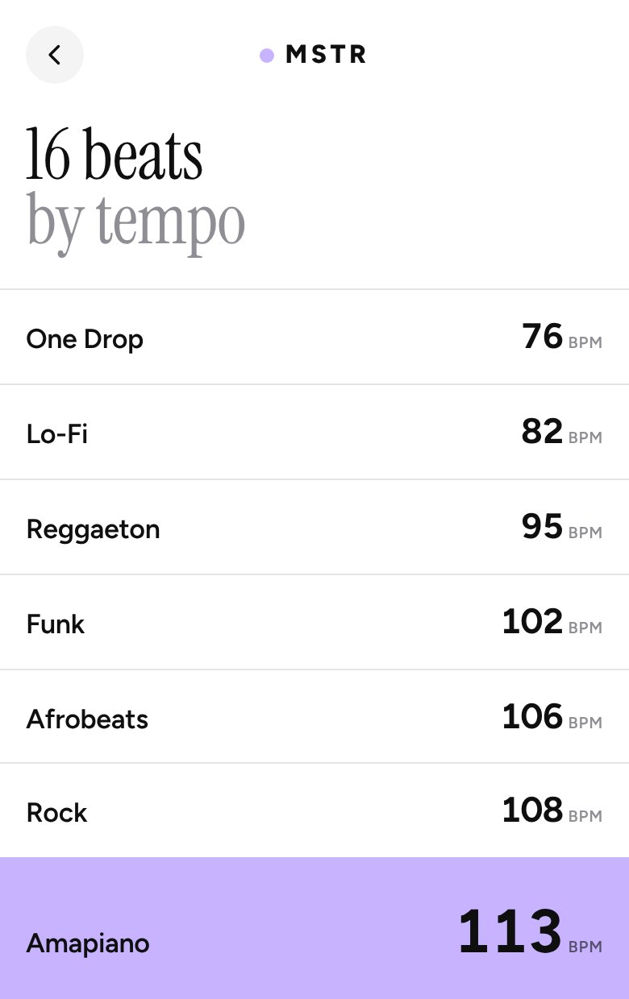
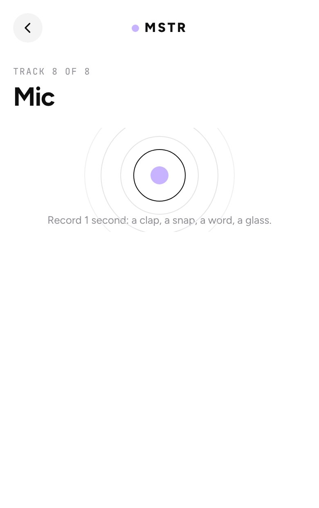
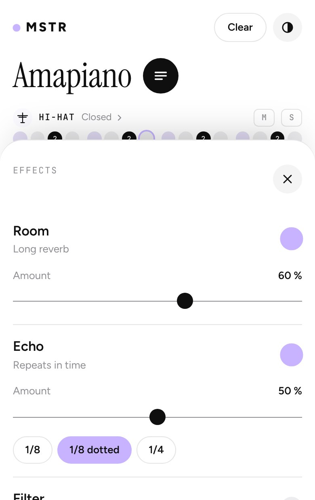

MSTR
gesprochen „Muster“
Beats bauen im Browser. Acht Spuren, sechzehn Schritte, sechs Effekte, dazu ein eigener Klang übers Mikrofon.

Tippen, und der Beat läuft

16 Vorlagen zum Loslegen

Eigenen Klang aufnehmen

Sechs Effekte zum Zuschalten
- 01Eine Vorlage wählen oder mit leerem Raster anfangen
- 02Schritte antippen, Tempo und Swing einstellen
- 03Effekte zuschalten, Drop zünden, in der Spur Mic selbst etwas aufnehmen
Jetzt loslegenOhne Anmeldung. Läuft auf Handy, Tablet und Computer, am besten mit Kopfhörern.